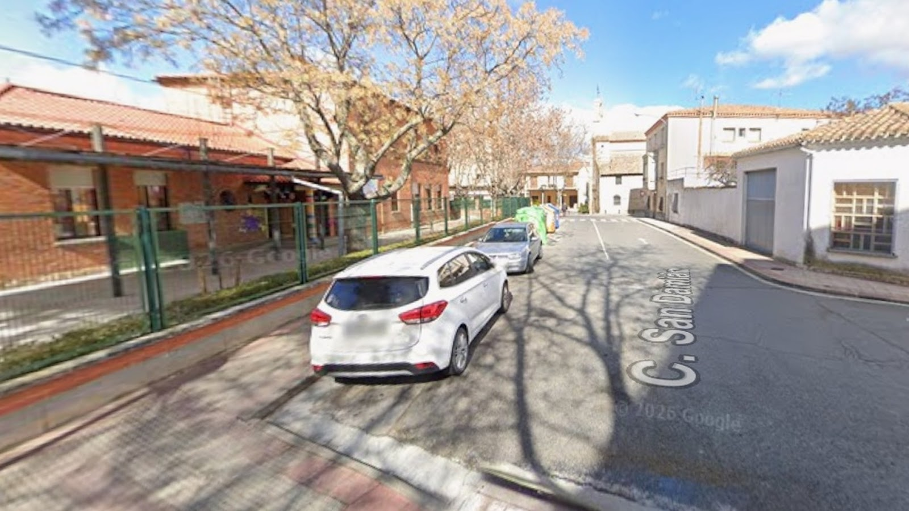
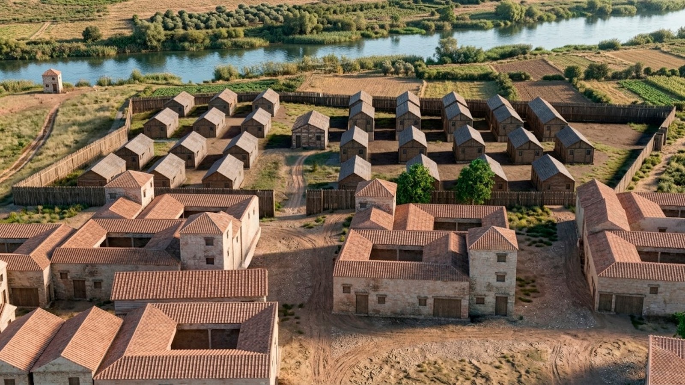
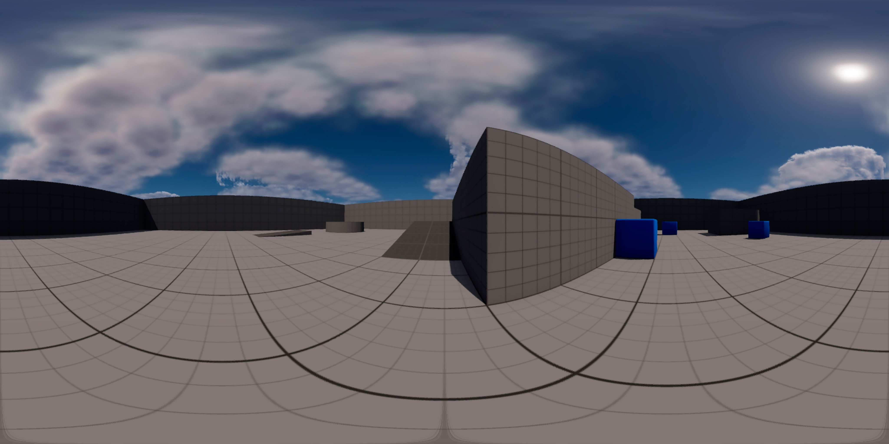

Modelado 3D
Productos y entornos con topología optimizada.
PORTFOLIO PROFESIONAL
Artista 3D · Animación · Modelado · Arte
EL OTRO LADO DEL TELÓN
Magia · Ilusionismo · Espectáculo
3D & 2D ARTIST
Artista 3D especializada en modelado, texturizado, iluminación y animación.
Soy Patricia Martín, artista 3D con formación superior en Animación 3D y experiencia en modelado de productos, entornos y props.
Productos y entornos con topología optimizada.
Texturizado PBR y renderizado fotorrealista.
Piezas audiovisuales y presentación.

Diseño de producto 3D, animación y renderizado comercial.

Proyecto de escultura y diseño de personaje en 3D.
Spot publicitario y renderizado de producto fotorrealista.

Modelado detallado de instrumento musical y texturizado.

Reconstrucción histórica y entorno interactivo 3D.

Diseño de escenarios, composición e iluminación ambiental.

Colección de objetos y elementos 3D con topología optimizada.

Recreación en 3D Almazara romana de Vareia
Colección de proyectos de modelado y presentación de producto.
Spot publicitario y desarrollo visual de vino.

Diseño y renderizado 3D de producto.
Spot publicitario y desarrollo visual del producto.


Modelado y visualización de producto Bolo.
Galería detallada de renders y proceso de trabajo.


Estudio de sombreado, geometrías y planos detallados.


Reconstrucción e integración de espacios.

Galería de entornos completos y diseño de iluminación.


Elementos assets e integración en escenas 3D.
Galería detallada de renders y proceso de trabajo.
Trabajo de Fin de Grado (Calificación: 10/10)
Recreación 3D e integración histórica de la antigua almazara romana de Vareia. Actualmente, este trabajo documental y divulgativo es utilizado por el Colegio de Varea (situado sobre los propios restos arqueológicos) para dar a conocer la historia romana a sus alumnos y a otros centros educativos.


PATRIMONIO · RECONSTRUCCIÓN 3D · EXPERIENCIA INTERACTIVA
Un recorrido visual por distintos puntos de la antigua Vareia, comparando su estado actual con su reconstrucción histórica.
ZONA / ALMAZARA
Reconstrucción histórica del enclave y comparación con su estado actual.



CONTEXTO HISTÓRICO
Este espacio muestra la reconstrucción 3D de una zona vinculada a la actividad agrícola e industrial de la Vareia romana. El comparador permite observar la relación entre el paisaje actual y la propuesta de reconstrucción histórica, mientras que el visor 360º permite explorar el entorno desde distintos ángulos.
Modelado 3D y diseño 2D de sistemas de butacas.
Especialización en Realidad Aumentada (AR), Realidad Virtual (VR) y Realidad Híbrida (MR).
Cursos especializados en ZBrush y Blender aplicados a la conservación de patrimonio y recreación de ciudades históricas.
Desarrollo y modelado de proyectos de visualización arquitectónica y producto.
Especialización en modelado, texturizado, animación e iluminación.
SpainSkills 2026
Seleccionada para representar a la comunidad autónoma de La Rioja en las olimpiadas de FP de Animación 3D y Desarrollo.
RiojaSkills 2025
Primer premio en el campeonato autonómico de habilidades profesionales en el área de tecnología y 3D.
La Gota de Leche
Reconocimiento al mejor cortometraje de animación 3D.
Email: patriciaanimacion3d@gmail.com
Teléfono: 628 243 657

Mi identidad artística nace como un homenaje al legado de mi abuelo, quien esculpía la piedra y era conocido como "El Pica". De su oficio heredo la premisa que guía mi trabajo sobre el escenario: esculpir la ilusión con paciencia, técnica y precisión hasta transformar la materia cotidiana en una experiencia extraordinaria.
Mi repertorio abarca desde espectáculos de escenario y galas teatrales hasta formatos de magia de cerca (Close-up) para eventos corporativos y culturales.
Mi objetivo se centra en dignificar el arte de la magia como una disciplina escénica contemporánea, capaz de sorprender a públicos exigentes y generar momentos memorables.
Abierta a programación en teatros, festivales, eventos corporativos y proyectos de creación cultural.

Con 15 años y viendo las esculturas de mi abuelo, cogí una de sus mazas y uno de sus cinceles y empecé a esculpir. Sentía como si las manos de mi abuelo guiasen las mías. Mágicamente donde había una piedra sin forma, aparecía una figura.
Esculpir la piedra y hacer magia son, en esencia, dos formas distintas de realizar el mismo acto: revelar lo invisible y transformar la materia.
El escultor no "crea" la forma desde la nada; la libera. Sabe que la figura ya habita dentro del bloque de piedra y que su trabajo consiste en retirar lo sobrante para sacarla a la luz.


La fotografía y la magia comparten un mismo centro de gravedad: la manipulación de la luz, el tiempo y la atención para transformar la realidad.
La fotografía no es solo un lenguaje paralelo, sino una herramienta que nutre directamente su dimensión artística sobre el escenario. Su sensibilidad para la composición visual, la perspectiva y el contraste influye en la geometría de sus efectos y en la estética de sus montajes.


Espectáculo de magia y narrativa escénica


La hermana del medio es una propuesta de ilusionismo contemporáneo que explora el lugar que ocupamos en la familia, las memorias compartidas y las dinámicas invisibles que definen quiénes somos.
Magia, memoria y el arte de esculpir la ilusión


PICA es el espectáculo más personal de Patricia Martín, un viaje escénico donde la magia se entrelaza con el homenaje familiar, la memoria y la artesanía.
Para contrataciones, programación de espectáculos o información: